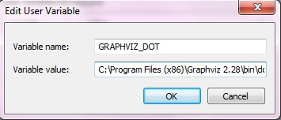

Sphinx dokumentacia¶
Instalacia¶
Python¶
- Pre pracu so Sphinxom treba mat nainstalovany Python.
Note
Python ponuka verzie 2.x a 3.x. Sphinx 1.3 moze bezat pod Python 2.6, 2.7, 3.3, 3.4, ale odporucana verzia je 2.7.
Pre stahnutie a instalovanie externych kniznic pre Python existuje prikaz pip. Prikaz uz sa nachadza v oficialnych verziach Pythonu 3.4.0 alebo 2.7.9.
Ak prikaz sa nenainstaloval automaticky, treba ho stiahnut zo stranky https://bootstrap.pypa.io/get-pip.py a niekam ulozit. V prikazovom riadku treba prejst do adresara s get-pip.py a spustit nasledovny prikaz:
python get-pip.py
Sphinx¶
Prejst do priecinku s dokumentaciou (tam kde index.rst sa nachadza) a pomocou prikazu pip nainstalovat Sphinx:
pip install sphinx
Ak treba vytvorit novu dokumentaciu, pre nastavenie zdrojoveho adresara a vytvorenie potrebnych suborov na pracu so Sphinx treba spustit prikaz
sphinx-quickstart
a odpovedat na otazky. Vyberte si vsetky predvolene odpovede a po vyzve zadajte nazov, autorov a verziu projektu.
Tymto prikazom budu vygenerovane subory Makefile, make.bat a conf.py.in.
- Vsetky konfiguracie dokumentacie su v conf.py.in.
Attention
Sphinx-quickstart a vytvaranie tychto suborov generuju novu dokumentaciu! Ak subory index.rst, Makefile, make.bat a conf.py.in uz existovali, tak sa prepisu!
- Sphinx dokumentacia generuje vystup v roznych formatoch zo suborov .rst. Podrobnejsie o RestructuredText.
HTML dokumentacia¶
Subor make.bat povoli vygenerovat dokumentaciu v tom formate, ktory potrebujete
Pre generovanie HTML dokumentacie treba v prikazovom riadku prejst do priecinku s ReST subormi a make.bat suborom a spustit prikaz
make html
Inak generovanie dokumentacie sa da spustit pomocou CMake v QtCreatore
PDF dokumentacia¶
Pre generovanie PDF dokumentacie potrebujeme najprv vytvorit Latex dokumentaciu.
Note
Pre pracu s Latex treba mat TeXlive
Prikazom
make latex
vygeneruje sa Latex dokumentacia, ktora nasledne sa moze konvertovat do PDF pomocou programu TeXstudio.
Note
PDF dokumentacia generuje len pomocou prikazoveho riadku a externeho programu, neda sa spustat cez CMake!
PlantUML¶
Pre pracu s PlantUML nastrojmi v Sphinx treba:
nainstalovat Javu
pridat Javu do premennych prostredi (environment variable)
nainstalovat Graphviz
- odporucana verzia je 2.28
pridat Graphviz do premennych

Note
Hodnota premennej ma byt do dot.exe
pridat Graphviz do extensions v conf.py.in:
extensions = ['sphinx.ext.graphviz']
nainstalovat sphinxcontrib-plantuml zo stranky alebo prikazom
pip install sphinxcontrib-plantuml
pridat pantuml do extensions v conf.py.in:
extensions = ['sphinxcontrib.plantuml']
stiahnut plantuml.jar
pridat do conf.py.in prikaz
plantuml = 'java -jar cesta/do/plantuml.jar'
Attention
Dolezite je zmenit tuto cestu na spravnu, aku mate aktualnu na Vasom pocitaci!
pridavat UML do dokumentacii je mozne pomocou
.. uml:: !include /cesta/do/subor.wsd(txt) alebo @startuml PlantUML kod @enduml
Excel tabulky¶
- Pre import Excel suborov do dokumentacie treba nainstalovat exceltable pomocou prikazu
pip install sphinxcontrib-exceltable
- Pridat exceltable do extensions v conf.py.in:
extensions = ['sphinxcontrib.exceltable']
- Importovat tabulky pridanim do .rst suboru:
.. exceltable:: caption
:file: path/to/document.xls
:header: 1
:selection: A1:B2
- Podrobnejsie o Options